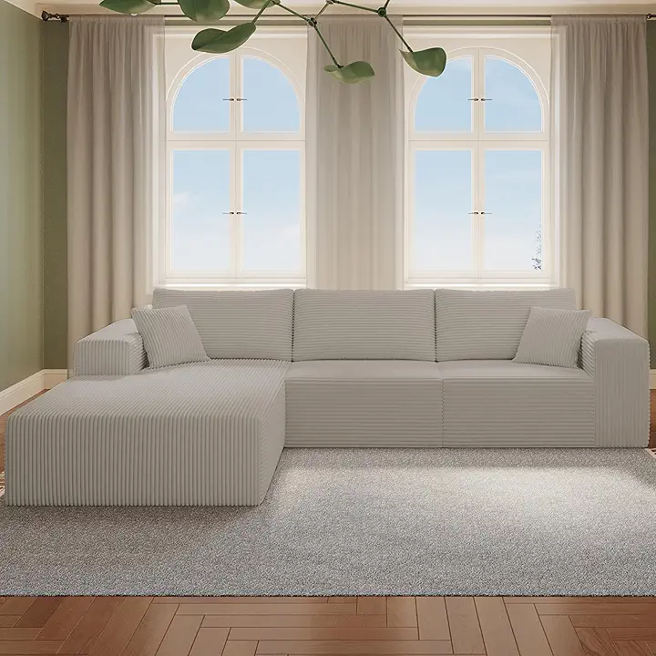
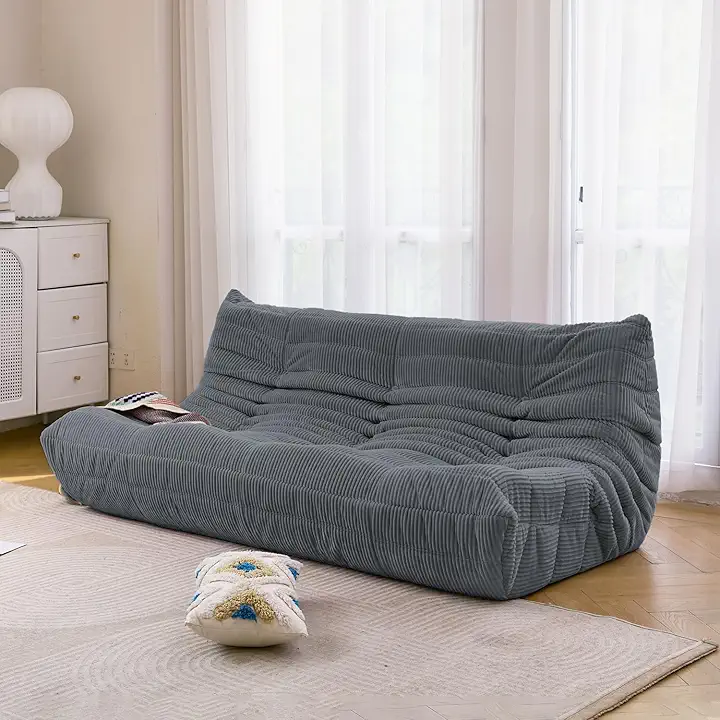
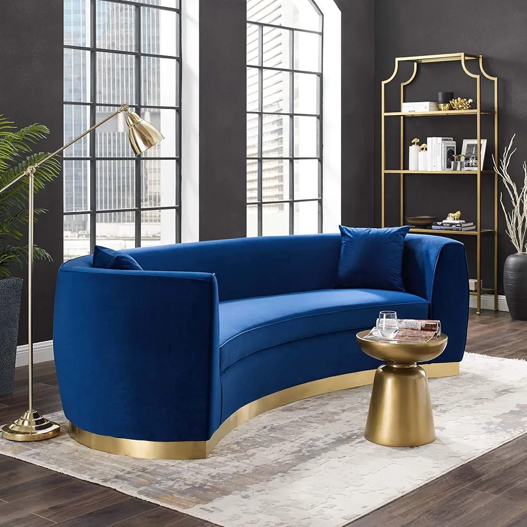

Discover stylish, functional, and affordable luxury with the Habitt Sofa Collection. Perfectly curated for the modern Pakistani home, our sofas blend contemporary aesthetics with everyday practicality. From compact studio fits to grand family seaters, we bring comfort that fits your life beautifully.

A Sectional Sofa is a large, multi-piece seating arrangement that can be configured into an L-shape or U-shape. Designed for spacious living areas and big families, it offers maximum seating capacity without compromising on style. Some models include a built-in chaise or ottoman for extra versatility and comfort.
Key Features:
Available in L-shape and U-shape configurations
Large seating capacity for families
Perfect for corners and open-plan rooms
Can include chaise lounge or ottoman
Some models are fully modular and rearrangeable

The Mid-Century Modern Sofa is inspired by 1950s and 60s Scandinavian and American design. It features a slim, clean silhouette with tapered wooden legs and firm, structured cushioning. Its minimalist yet warm aesthetic makes it a perfect fit for modern, compact, and contemporary interiors that value both function and style.
Key Features:
Clean lines and slim, minimalist profile
Distinctive tapered wooden legs
Retro yet timeless design
Compact — ideal for smaller rooms
Available in fabric and leather upholstery

The Tuxedo Sofa is a bold, architectural statement piece where the arms and back are at the exact same height, creating a perfectly symmetrical and structured silhouette. Named after formal tuxedo attire, it radiates sophistication and confidence. Its sharp, boxy design makes it a showstopper in any upscale or contemporary interior.
Key Features:
Arms and back at equal height
Structured, boxy and angular design
Exudes formal sophistication and luxury
Available in velvet, leather, and premium fabric
Perfect for upscale and contemporary interiors